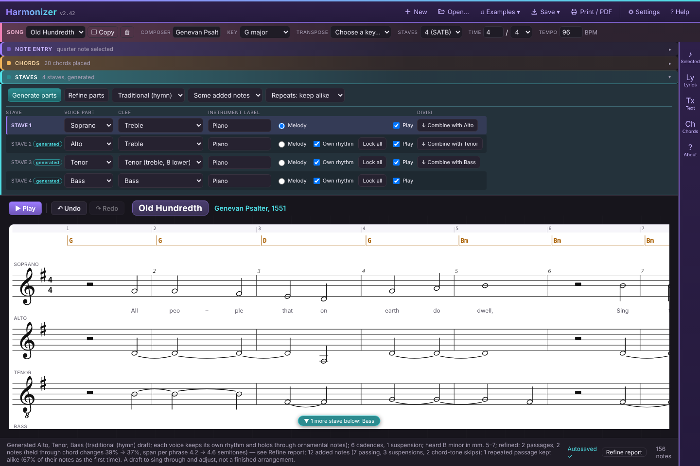
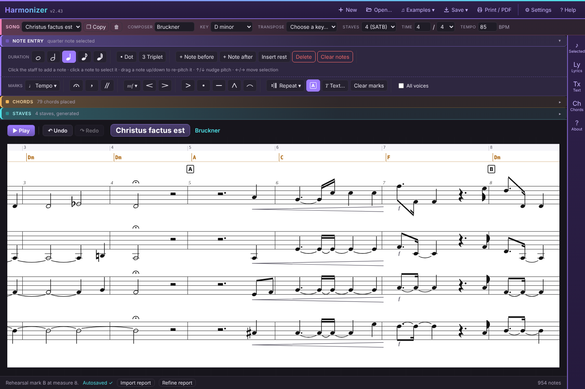
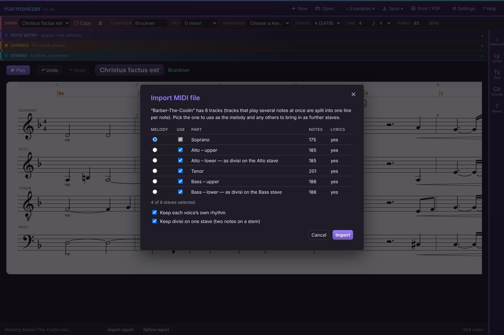
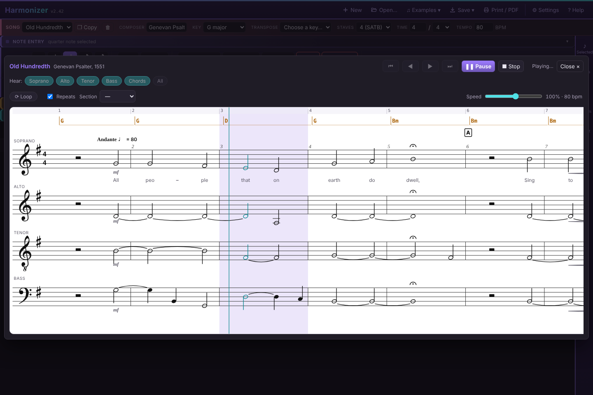
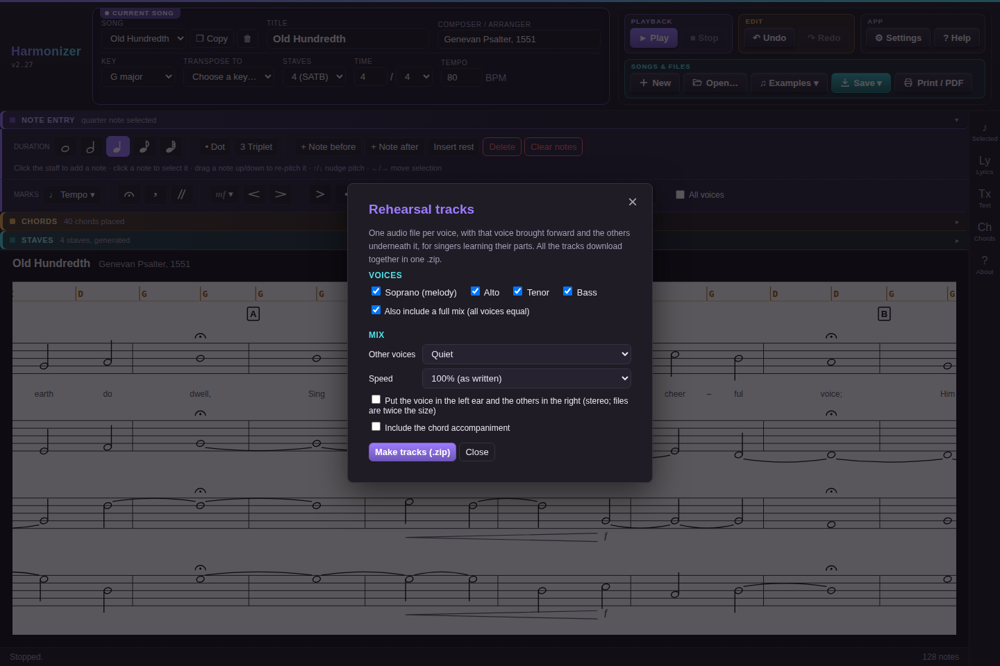

Harmonizer Quickstart
Harmonizer helps you sketch, test and teach vocal arrangements. This page gets you productive fast with the two ways most people work — writing a song from scratch, or starting from a MusicXML or MIDI file you already have — and then handing your singers rehearsal tracks. For every detail, see the full user guide.
Launch Harmonizer → · User guide · About the project
Seven things to know first
- Everything autosaves in your browser. There is no save button for that — but do keep a backup: ⚙ Settings → Export library saves every song in one file. If saving ever fails, an amber warning appears at the bottom of the screen.
- The tools fold away. Note entry, Chords and Staves are strips above the score; click one to open it. The panels for the selected note, lyrics and text slide out from the icon rail on the right.
- One stave holds the melody (the top one, unless you move it with the Melody button). The others are blank and waiting for Generate parts, filled by a previous Generate parts run, or ticked Own rhythm and edited freely like the melody — that last kind is yours alone; Generate parts never touches it.
- It always sounds like a grand piano, never a choir. Press Space or Play (on the bar just above the score) and a large play window opens showing the score.
- Chords sit in the lane above the top stave. They drive Generate parts, and can also be worked out from the notes you already have.
- Undo is there (Ctrl+Z), and Copy beside the Song menu makes a duplicate to experiment on.
- Want to look around first? Examples ▾ in the header opens a choral piece to explore — and on a first visit Harmonizer offers them straight away.
Workflow 1: create a melody, chord it, then write parts
Step 1 — Set up the song
- Press New for a blank song. Give it a Title, and choose the Key, Time signature and Tempo it starts in. (Changes later in the song come in Step 5.)
Step 2 — Enter the melody
Use whichever way suits you; they mix freely.
- Click the staff. Open Note entry, pick a duration (whole, half, quarter, eighth, sixteenth), add • Dot or 3 Triplet if needed, then click where the note should go. Click a note to select it, then drag it up or down (with a mouse, pen or finger) or press ↑ / ↓ to change its pitch; ← / → step along the notes.
- Type it. Open Text in the icon rail and write notes as letter + octave + duration in Melody text, then press Apply text → melody. For example
G4q A4q B4q C5h(qquarter,hhalf,eeighth,ssixteenth,wwhole,.dotted,~tie,Rrest,#/b/naccidentals,/wordfor a lyric). - Press Space to hear it. Fix anything that sounds wrong.
Lyrics: click the first note, press Enter and type the words — Space moves to the next note, - splits a word (Twin-kle), _ holds a syllable over the next note. Or paste a whole verse into Lyrics in the icon rail and press Fill from start. Up to six verses; pick the verse beside the Lyric box.
Step 3 — Add chords
Open Chords and choose one of:
- Suggest chords — a quick diatonic guess, one chord per measure, from the key and melody.
- Type them — in the Chords panel of the icon rail enter one chord per measure, such as
C G Am F, and press Apply text → one chord per measure. - Click them in — pick a root and quality, then click in the chord lane above the staff where the chord should start. Click a chord to select and change or delete it.
Leave Play chords on to hear them under the melody. Chords are a draft: change any that don't suit, because the parts are built from them.
Step 4 — Write the parts
- Set Staves on the song line under the navbar: 4 gives SATB (Soprano, Alto, Tenor, Bass), 3 gives SAB. Up to 8 staves are available, and you can change any stave's voice and clef in the Staves section.
- Open Staves and pick a style in the menu beside Generate parts:
- Close harmony — contemporary a cappella, voices close together (the default).
- Traditional (hymn) — textbook four-part writing: no parallel fifths or octaves, and it steers clear of hidden and contrary ones, overlapping voices, cross-relations and augmented seconds.
- Open (wide) — the voices spread out, with a lower tenor and bass.
- Press Generate parts. Every eligible stave gets a draft in that style, each voice holding (tied) through repeated or ornamental melody notes rather than restriking every beat. The draft is then refined as lines: fewer long held notes and less back-and-forth, and notes are traded between voices where that helps. Where the melody holds, voices add notes of their own — passing and neighbour notes, suspensions — set by the Added notes menu beside the style (none / some / more). Music that comes back — a second verse, a refrain — gets the same parts as the first time (the Repeated music menu: keep alike, vary lightly, or write fresh). Refine report in the status bar shows what changed and where. Not sure which style? Press Copy, and generate the copy in another style to compare.
- Press Play. In the play window use the Hear buttons to listen to voices alone or together (click to include or exclude, Shift-click to hear only one).
- Edit by hand: click a generated note and drag or nudge its pitch — this locks it (a blue padlock and dashed line appear over locked notes), so it survives the next Generate parts while the rest of the stave is rebuilt around it. Unlock it from the inspector, or lock/unlock a whole stave with the buttons in the Staves section. After editing, Refine parts smooths the other voices around your changes without rewriting them.
- Move the tune, or leave it out, for a passage: click a measure number in the row above the chords (Shift-click or drag for more). In the Selected panel, set Melody in to another stave — say the Tenor for verse 2, with Bring the tune with it ticked — or to None (chords only) for an introduction or a hummed background, and press Apply. Generate parts then writes the other voices around it (the sopranos over a tenor tune get a descant or a harmony).
- Redo just part of it: with measures selected, tick the staves to redo and press Rewrite; everything else stays as it is. To keep the soprano and bass and rewrite the inner parts, press All measures, untick Soprano and Bass, then Rewrite.
- To give a voice its own moving rhythm entirely by hand, tick Own rhythm on that stave, then click its staff to add notes. Once you've written into it, it's yours and Generate parts leaves it alone. Untick it to hand the stave back (it asks first).
Generate parts is a rough draft, not a voice-leading expert. It replaces every eligible stave's harmony on each run, keeping only the notes you've locked, so do your chord work first.
When a melody note doesn't fit well under the current chord, Generate parts proposes a different one instead of forcing an awkward voicing — a button appears next to it (e.g. Beat 4: C → F♯7); click to apply and regenerate, or ignore it.

Step 5 — Key, tempo and time changes (if the song has any)
- Click a note in the measure where the change happens.
- Open Selected in the icon rail and scroll to Key, tempo, time & rehearsal marks.
- Pick the new key, type the new tempo, and/or set a new time signature, then press Apply. The change is drawn on the score, heard on playback and listed in the panel, with a ✕ to remove it.
Existing notes keep their pitches when you add a key change; new notes you enter follow the new key.
Step 6 — Add the expression
Open Note entry: the Marks row under the duration buttons works on the selected note(s), and everything you add is heard on Play.
- Tempo ▾ — a tempo word on the first note (Andante, Allegro…), rit. over the last few notes of a phrase, a tempo where it picks up again.
- Fermata (or F), breath mark and caesura for the shape of each phrase.
- mf ▾ for dynamics and the < / > hairpins over a selected run; accent, staccato, tenuto, marcato and slur beside them.
- Tick All voices to put a mark on every stave at once — the quick way to write pp or a fermata for the whole choir.
- A puts a rehearsal letter at the start of the measure, and Text… writes “hum”, “solo” or “div.” above the stave.
- Repeat ▾ adds repeats, 1st/2nd endings, D.C./D.S., Fine and Coda to the selected measures — Play follows them.
Words: click the first note, press Enter and type — Space moves to the next note, - splits a word (Twin-kle), _ holds a syllable over the next note. For another verse pick v2 beside the Lyric box. Once the parts are written, Lyrics › Copy lyrics to the other staves gives every voice the words.
Tip: add dynamics and fermatas to the melody before Generate parts — the voices it writes copy them.

Step 7 — Refine and keep it
- Changed a voice a lot? Press Chords from voices to have Harmonizer read what the staves now sing and rewrite the chord symbols beat by beat.
- Want another key? Transpose (on the song line under the navbar) moves everything — notes, chords and key changes on all staves — to another key of the same mode.
- Finish with Save → as .musicxml (for notation software), Save → as .mid (for rehearsal apps and DAWs), and/or Save → as .json (a full Harmonizer backup of this song). See also Getting it to your singers.
Workflow 2: start from a MusicXML or MIDI song, then test it and make changes
Step 1 — Import
- Press Open… and choose a
.mxl,.musicxmlor.xmlfile (from MuseScore, Finale, Sibelius and similar) or a.midMIDI file. It always opens as a new song, so nothing you already have is overwritten. - If the file has more than one line of music, a chooser lists them. Pick which is the melody (its lyrics and chord symbols become the song's) and tick the others to bring in as further staves (up to eight). A stave that holds two lines — a divisi, a second voice, a piano part — is offered as separate lines (“Alto – upper”, “Alto – lower”, “voice 2”). With Keep divisi on one stave ticked (the default), a lower line comes in on its upper line's stave, two notes on a stem where the part divides, instead of a stave of its own.
- Leave Keep each voice's own rhythm ticked so inner voices keep their own moving notes (and their dynamics, slurs and other marks). Untick it only if you want every voice squeezed onto the melody's rhythm.
- Press Import. The status line reports what came across — including any key and tempo changes — and anything simplified.
- Click Import report in the status bar to compare what the file held (notes, lyrics, dynamics, slurs, fermatas…) with what's now in the song, and to see anything Harmonizer doesn't model (trills, tremolos and so on). If anything came up short, the report opens by itself.
Whatever instrument the file uses, it plays as piano. The file's instrument names are kept as labels on each stave (and written back out on export), but Harmonizer's own sound is always grand piano.


Step 2 — Make a working copy
Press Copy beside the Song menu right away and do your experiments on the copy. The imported song stays untouched as your base version, and you can switch between them in the Song menu.
Step 3 — Test it by ear
- Press Space. The play window shows the score and follows the music, through any tempo changes. When it stops, use ◀ ▶ to page through, or ⏮ ⏭ to jump to the beginning or end (Play then starts from there), then Play again. Selecting a note first makes playback start from there.
- Use the Hear buttons to check one voice on its own, or leave out a voice to judge the balance of the rest. Esc closes the window.
- Working on a tricky passage? Select a note in it and press Loop (or L) to repeat its measure — or select across several measures to loop them all — and drag Speed down to hear it slower without changing pitch. If the song has rehearsal letters, Section jumps to one (and Loop repeats that section). Repeats and D.C./D.S. are followed; untick Repeats to play straight through.
- If the harmony is unclear, press Chords from voices to see chord symbols worked out from all the staves (every beat, half measure or measure).

Step 4 — Make changes
- Change pitches: click a note and drag it or press ↑ / ↓ (with Shift for an octave-ish jump). The inspector in the Selected panel sets the exact letter, octave and accidental.
- Change rhythm, or add or remove notes: on the melody, or on any stave with Own rhythm ticked, use the duration buttons, • Dot, ⁀ Tie, + Note before / after, Insert rest and Delete, or click the staff to add a note.
- Edit lyrics: select a note and press Enter to type from there (Space moves on), or use Load verse / Fill from selected note in the Lyrics panel. Copy lyrics to the other staves gives every voice the words.
- Add marks and repeats: the Marks row in Note entry adds dynamics, fermatas, rit., articulations and rehearsal letters, and Repeat ▾ adds repeats, endings and D.C./D.S. (see Workflow 1, Step 6).
- Divisi: in Staves, ↓ Combine with… folds the stave below onto this one (two notes on a stem where they differ) and Split divisi separates them again. To split a part for a few notes, select them and use Divisi › + 3rd below in Selected.
- Change chords: click a chord in the lane to change or delete it, or click a blank spot to add one.
- Change the key: use Transpose to for the whole song. (The plain Key menu only relabels the opening key without moving any notes.) For a key change part-way through, see Step 5 of Workflow 1.
- Re-voice the harmony: after fixing the chords, untick Own rhythm on a stave, choose a style, and press Generate parts to have it rewritten. That discards the stave's own notes, so do it on your copy.
- Made a mess? Ctrl+Z.
Step 5 — Save your result
- Save → as .musicxml writes your changed version for other notation software.
- Save → as .mid writes a MIDI file, one track per voice, with its tempo, key and time changes, dynamics and lyrics, and the repeats written out as they're played.
- Save → as .json keeps a complete Harmonizer backup of the song that reopens exactly as you left it.
What import simplifies. Rhythms shorter than a sixteenth are folded into a neighbouring note, and triplets other than simple 3:2 ones aren't kept. From MIDI, rhythms are rounded to the nearest sixteenth, so triplets and freely played timing come out approximate. Lyrics (every verse), dynamics, articulations, repeats and tempo marks come across and can be edited; grace notes are shown but can't be. From MIDI, dynamics are read from note velocities, fermatas from brief tempo drops, and markers become rehearsal marks. The Import report lists anything that didn't come across. Keep your original file as the master, and use Harmonizer to test and sketch changes.
Getting it to your singers
- Open the Save ▾ menu and choose Rehearsal tracks… (the last item).
- Tick the voices you want tracks for, and whether to add a full mix.
- Choose how loud the other voices are (from half volume down to silent), a speed (a slow set at 75% is good for learning notes), and optionally left ear / right ear to put each singer's part in one ear.
- Press Make tracks (.zip). One .zip downloads, with a file per voice named after the song —
My-Song - Alto.wavand so on — ready to share.
The tracks follow everything Play does: tempo marks, fermatas, dynamics, and the repeats. Divisi notes are in their voice's track; use Split divisi first if Alto 1 and Alto 2 each need a track of their own.

For singers who use a rehearsal app, send the Save → as .mid file too: many of them let each singer turn their own part up.
Handy extras
- Space plays, pauses and resumes: pause, then press it again to carry on from the same spot — or click a note in the play window first to resume from there. Stop starts over. In the play window, ← → page, Home / End jump, L loops, [ ] change the speed, and Esc closes.
- Many staves? If some are scrolled out of view, a small badge at the top or bottom of the score names them. Click it to scroll.
- Settings (the gear) switches the score between black-on-white and dark, turns barlines on or off, holds the library backup, and controls two checks: Range warnings (notes outside a voice's comfortable range turn orange — on by default) and Mark partwriting problems (dashed lines labelled 5 / 8 for parallels, c5 / c8 contrary, h5 / h8 hidden, ov overlap, x cross-relation, +2 augmented second; tick which to look for). Mark generated notes puts a dotted cyan line with a star over the notes Generate parts wrote, on staves that also have yours.
- Multi-select: Shift-click for a range, Ctrl/Cmd-click to add or remove one note.
- On a tablet you can tap to select and drag notes with a finger.
- Help in the app header gives a shorter in-app summary of everything above.
Cheat sheet
| I want to… | Do this |
|---|---|
| Start a new song | New |
| Enter notes | Click the staff, or type in Melody text and Apply text → melody |
| Undo a mistake | Ctrl+Z (redo: Ctrl+Y) |
| Hear it | Space / Play; Hear buttons choose voices |
| Pause and pick up again | Space to pause, Space to resume (click a note first to resume there) |
| Drill a passage | Select it, Loop, and lower Speed — or pick a rehearsal letter in Section and Loop that |
| Add a fermata, rit., dynamic or hairpin | Select the note(s) → the Marks row in Note entry (All voices for every stave) |
| Mark rehearsal letters | Select a note in the measure → A in the Marks row |
| Repeats, endings, D.C. / D.S. | Select the measures → Repeat ▾ in the Marks row |
| Type lyrics | Select a note, Enter, type; Space next, - split, _ hold |
| Give every voice the words | Lyrics › Copy lyrics to the other staves |
| Put Alto 1 and 2 on one stave | Staves › ↓ Combine with Alto II (and Split divisi to separate them); on import, leave Keep divisi on one stave ticked |
| Split a part for a few notes | Select the notes → Selected › Divisi › + 3rd below |
| Add chords | Suggest chords, type them, or click the chord lane |
| Write parts | Set Staves, pick a style, Generate parts |
| Improve the lines after editing by hand | Refine parts (then Refine report to see what changed) |
| Protect a hand-edited note from Generate parts | Automatic — or lock/unlock it yourself |
| See what's locked | Blue padlock + dashed line over locked notes (click it to select them); Selected measures counts them per stave |
| See what was generated | Dotted cyan line + star over generated notes on a stave that also has yours (Settings → Mark generated notes for every stave) |
| Measure numbers over every stave, or none | ⚙ Settings → Measure numbers |
| Select whole measures on every stave | Click, Shift-click or drag the measure numbers above the chords; Esc clears |
| Tenors (or basses) take the tune for a verse; chords-only intro | Select the measures → Melody in Tenor / Bass / None → Apply, then Generate parts |
| Rewrite some staves in some measures | Select the measures, tick the staves → Rewrite |
| Give a voice its own rhythm, off-limits to Generate parts | Tick Own rhythm on its stave |
| Change key or tempo part-way through | Select a note there → Selected panel → Key, tempo, time & rehearsal marks |
| Check ranges and partwriting | Orange notes are out of range; ⚙ Settings → Mark partwriting problems |
| Name the chords from the voices | Chords from voices |
| Move the whole song to another key | Transpose to |
| Try a variation safely | Copy beside the Song menu |
| Bring in a score | Open… a MusicXML or MIDI file |
| Make learning tracks | Save ▾ → Rehearsal tracks… |
| Take it elsewhere | Save → as .musicxml or Save → as .mid |
| Back up everything | ⚙ Settings → Export library |